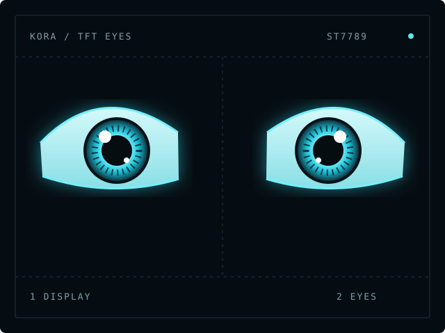

Beautiful eyes.No makeup required.
Kora’s expressive eyes, shared free for your next build. One ESP32. One display. A little personality — and a canvas in RAM.
V7.4 “CRT Edition” · ESP32-WROOM · ST7789 · EN / PL

Draw in memory. Then show the result.
Want beautiful eyes without makeup? Give them a canvas. It is a grid of pixels in RAM: an invisible workbench where the ESP32 assembles an image before sending it to the TFT.
Clear the canvas
Start with a black buffer in memory. The display keeps the previous image.
Build the eye
Add the glow, iris, pupil, eyelids and CRT mask to the same buffer.
Send the finished region
drawRGBBitmap() copies that completed eye region to the display over SPI.
Direct drawing · visible screen
RAM canvas · visible screen
Slow, step-by-step illustration of the idea. It does not simulate SPI timing or measure the firmware’s frame rate.
A canvas hides the drawing stages and reduces erase/redraw flicker. It does not guarantee zero tearing: the display is still updated over time, and its refresh may overlap the transfer.
Spend RAM on the eye, not the whole screen.
GFXcanvas16 stores RGB565 pixels: 5 bits for red, 6 for green and 5 for blue. Each pixel needs 2 bytes. getBuffer() gives the display library access to those pixels.
V7.4 first tries a 160 × 240 buffer. It draws the left eye, copies it to the left half of the ST7789, then reuses the same RAM for the right eye. Both eyes use the current faceNow pose.
If allocation fails, the sketch tries 152 × 224, 144 × 208 and finally 128 × 180. If none fits, it reports the error over serial and skips drawing.
| RGB565 buffer | Pixel data only |
|---|---|
| 160 × 240 · this release | 76,800 B · 75 KiB |
| 320 × 240 · whole screen | 153,600 B · 150 KiB |
| 240 × 240 · round-screen example | 115,200 B · 112.5 KiB |
| 2 × 240 × 240 buffers | 230,400 B · 225 KiB |
The 240 × 240 numbers explain a possible future round-display design. The downloadable sketch is for one rectangular ST7789 only.
“520 KB SRAM” on an ESP32 specification is not 520 KB of free canvas space. Firmware, stacks and networking share memory. Check available heap, the largest free block and the allocation result; fixed “Wi-Fi uses X KB” budgets are unreliable.
// Simplified excerpt from drawFace(): same RAM, two screen regions.
renderEye(*eyeCanvas, oL, faceNow.tiltL, faceNow.curveL,
faceNow.lookX, faceNow.lookY, faceNow.pupil,
faceNow.color, true, breath);
applyCrtMask(*eyeCanvas, faceNow.color);
tft.drawRGBBitmap(xL, yT, eyeCanvas->getBuffer(), EYEW, EYEH);
renderEye(*eyeCanvas, oR, faceNow.tiltR, faceNow.curveR,
faceNow.lookX, faceNow.lookY, faceNow.pupil,
faceNow.color, false, breath);
applyCrtMask(*eyeCanvas, faceNow.color);
tft.drawRGBBitmap(xR, yT, eyeCanvas->getBuffer(), EYEW, EYEH);This is one reusable off-screen buffer, not a full-screen, double-buffered frame swap. The two eye regions are sent sequentially. The shared pose coordinates expressions; it does not make both transfers instantaneous. When adapting to asynchronous DMA, wait for the transfer to finish before reusing the buffer.
A frame limit is not a frame-rate promise.
At an assumed SPI clock of 40 MHz, sending 240 × 240 × 16 bits takes at least 23.04 ms. Two such images take 46.08 ms: a theoretical ceiling of about 21.7 paired frames/s before drawing and other overhead.
240 × 240 × 16 / 40,000,000 = 0.02304 s
// V7.4: two 160 × 240 eye regions, at the same assumed clock:
2 × 160 × 240 × 16 / 40,000,000 = 0.03072 sThese are calculations, not measured results. V7.4 uses tft.init() without explicitly setting an SPI clock. The real clock depends on the driver/platform. The 33 ms guard only limits how often drawFace() starts; rendering, Wi-Fi and SPI can make it slower.
The code. The wiring. The first blink.
This release contains Kora TFT Eyes V7.4 “CRT Edition” for ESP32-WROOM and one ST7789V 240 × 320 display, rotated to 320 × 240. It includes moods, blinking, gaze, sleep breathing, CRT wake/sleep effects and optional ear-servo control.
The public copy keeps the supplied V7.4 eye renderer and GPIO map. Fixed AP/OTA passwords have been removed. Wi-Fi is off by default; USB serial control is ready to use.
Start here
- Unzip the package. Open KORA_TFT_EYES_V7_4_PUBLIC.ino inside the folder with the same name.
- In Arduino IDE, install “esp32 by Espressif Systems” 3.x and select ESP32 Dev Module for a compatible ESP32-WROOM board.
- Install Adafruit GFX Library, Adafruit ST7735 and ST7789 Library, ESP32Servo and the dependencies offered by Library Manager.
- Match the display signals to the GPIO table. Use your module’s rated supply and backlight wiring; ESP32 GPIO uses 3.3 V logic.
- Verify and upload. Open Serial Monitor at 115200 baud with a newline ending. The firmware boots asleep: send WAKE 60000 to wake it for one minute.
Ear servos are optional hardware, but the firmware outputs signals on GPIO25/26 at startup. If fitted, check the mechanical range first, use suitable external servo power and a common ground.
GPIO map from the sketch
| Display signal | ESP32 GPIO |
|---|---|
| SCLK / SCL | 18 |
| MOSI / SDA | 23 |
| DC | 16 |
| RST / RES | 17 |
| CS, if exposed on the module | 27 |
| Left / right ear servo signal | 25 / 26 |
GPIO numbers, not physical header positions. The source names the GMT020-02-7P v1.3 module. Some ST7789 modules expose no CS pin: do not invent a connection. This table does not specify VCC or backlight voltage.
| Serial command | What it does |
|---|---|
WAKE 60000 | Wake for 60 seconds. Bare WAKE defaults to 8 seconds. |
MOOD happy | Select the happy expression. Try angry, curious or thinking too. |
M | Trigger a blink; wakes the eyes if needed. |
SLEEP | Start the sleep transition. |
STATUS | Print mood, state, heap and connection information. |
LIST | List the available expressions. |
Validation: compilation details and public-release changes are recorded in the included README. Hardware behaviour of this exact public copy still needs to be checked on your own build.
A few useful checks.
The eyes are assembling visibly.
Check that fillScreen(), circles, eyelids and masks draw to the canvas. Clearing the actual TFT every frame brings the black flash back. One drawRGBBitmap() call is a bitmap update, not a promise of one atomic hardware transfer.
The board reports a buffer allocation error.
Read Serial Monitor. The sketch already attempts smaller buffers. Reuse one buffer, allocate it once at startup, and check available contiguous RAM. Flash size is not free RAM.
The image is split or leaves thin trails.
A canvas cannot by itself synchronize the TFT refresh. Reduce the amount of data or use the controller’s supported synchronization features. When moving an update rectangle, also cover its previous position. V7.4 includes a small position drift; inspect the borders on your panel.
Can I use two round displays?
A separate GC9A01 version is planned after physical testing. It is not included in this download. The canvas idea carries over, but the display driver, dimensions and wiring differ.
How do I enable Wi-Fi or OTA?
Set ENABLE_WIFI to true and choose your own AP_PASS (12–63 characters) and OTA_PASSWORD (at least 12 characters). Then provision your Wi-Fi using the steps in the README. The original HTTP control API has no login: use it only on a trusted local network.
Shared for other builders.
Use and adapt this eyes sketch in your own projects. Please keep credit to Marcin Stapowicz / Kreatywny Morrcin and link back to this page. Third-party libraries retain their own licences.
Kora is my personal robot, not a product for sale. This page gives the next builder a useful starting point.